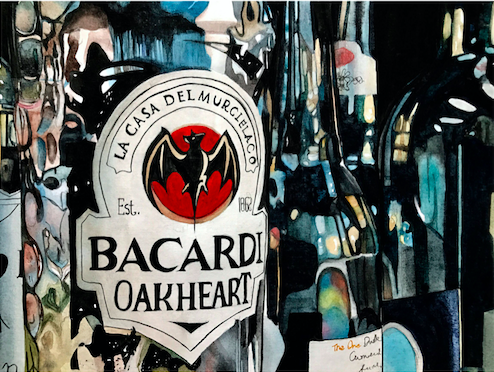
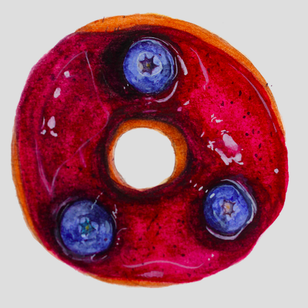
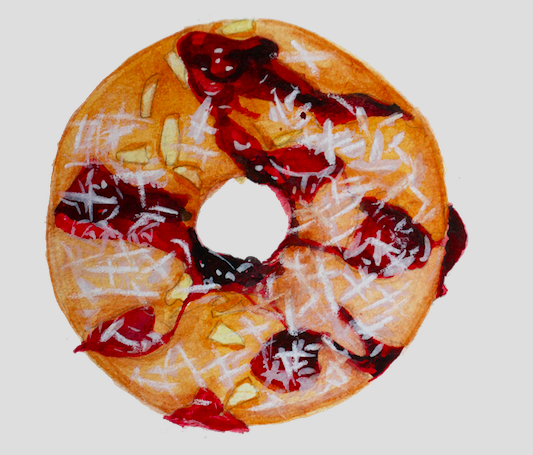

Outline who your audience is and what message you want to communicate. Define the visual language and web tools that will best fit your idea. Minimum of 500 words and 3 images.
PART ONE
For the final project, I want to build a website to introduce a Disney Story. For the contents, I will include the background story of Disney and its founders. I will also have the bibliography for these founders. I will include the background of the story, for example, how they created it and what’s behind the story. For Disney stories, they borrow some horror stories form daily life and recreate it. Therefore, I might include some of them. In the menu bar, I will have the pot, the cast, the production, story development, animation, music, release, and the Legacy. I will add some images for the character, and also the image of Disney company and founder. I am still selecting the stories, either the Snow White and the Seven Dwarfs or Cinderella. However, the contents will be the same.
My audience will be mostly focused on children and young teenager, it is also for some artists who want to know deeper about the whole story. I want to attract the children by the color and layout. I believe adding background music defiantly helps with that. I found that very interesting is that there are lots of plot for Disney, and video for the story. However, not everybody knows who made the movie, who created the story, and the background for the story. Therefore, I want to do a website that contains all the information at once. It will help people to know more, and deeper about the story and Disney.
When opening the website, I want to see a big title of the story. There will be a menu bar on the top right, when you open it, it will offer different sections for people to click on to. People and also scroll down the page, and it will show the author and timeline. I will be using HTML and CSS to create the layout. I will also be using javascript to do some animation to the author's part when you scroll down. I want it to show up slowly, from left to right. I will make a simple background color, without too many pattern and texture. I want to make it clean, so it will not confuse the reader too much. I will also try to add some music on the page when you open the website, the music will play by itself. I will put my personal information at the end of the page, I will write down my name and email address, in case someone wants to give me feedback or want to talk to me.
  
PART TWO
For the final project, I want to build a website to introduce my artwork. Basically, it is to build my portfolio website. I will have six parts on my website. Home page, about, portfolio, some side title for each of my artwork, and last but not least, the contact. I will also try to add some video into the website, I will try to learn how to add it. Because I have an animation project, and I want to put it on the website.
When opening the website, I want to see a big title of the name. There will be a menu bar on the top right, when you open it, it will offer different sections for people to click on to. People and also scroll down the page, and it will show my bibliography, my works, and contact. I want to create a clickable mark to let people get in each different collection of my artworks. I will create three boxes, and each one has the name of my collection. Because there are too many works, I want to place them into servals topics, therefore, people will not feel too messy about the layout. I also want the works can be shown slowly when I open the page, from top to the bottom or in different directions. I will use HTML and CSS to create the layout. I will also be using javascript to do some animation to the bibliography part when you scroll down. I want it to show up slowly, from left to right. I will make a simple background color, without too many pattern and texture. I want to make it clean, so it will not confuse the reader too much. For the bottom of the page, I want to create a box that people can write some comments on it, and I will write down my name and email address, for people who want to give me feedback or talk to me.
My audience will be mostly focused on the business owner or HR, it is also for some artists to get to know my work. I would love to hear from different people and see what do they think about my works. I want to attract the children by the color and layout when they first open my page. It is very helpful for a young artist to have their website and collect their works together. It is good to work to show the company about your talent and works.